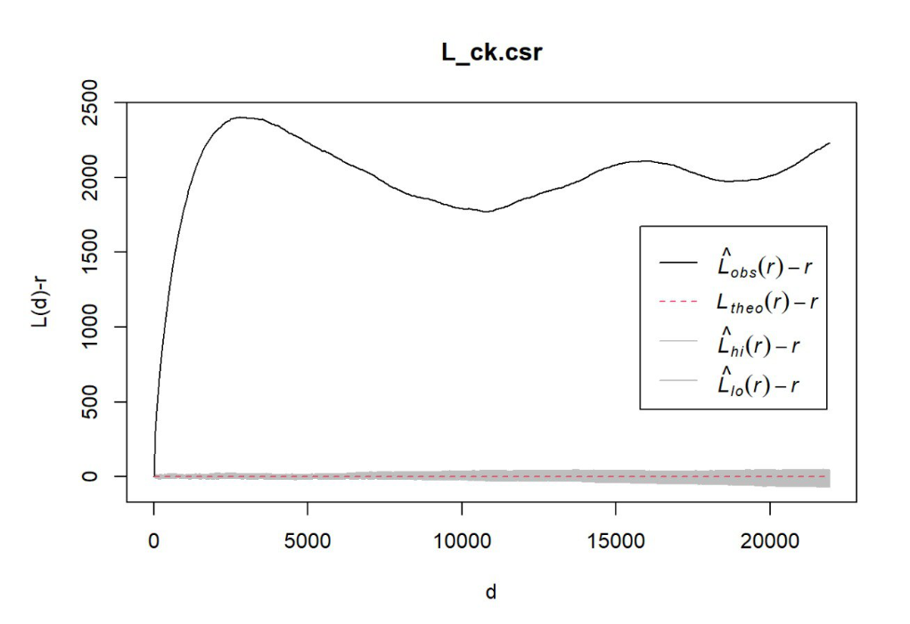
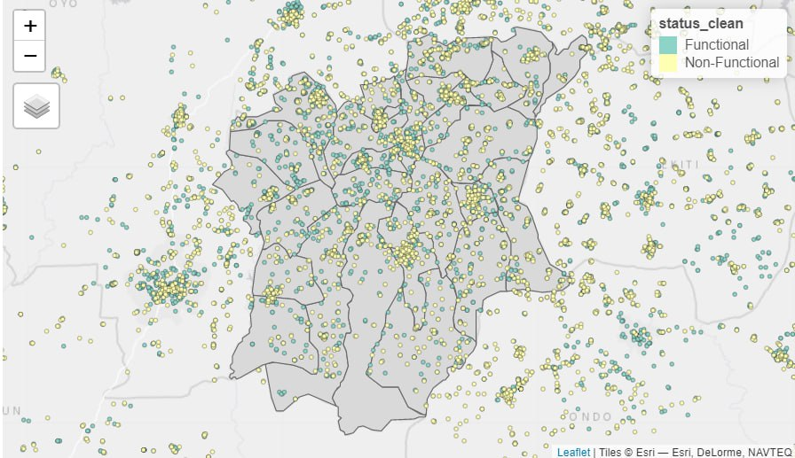
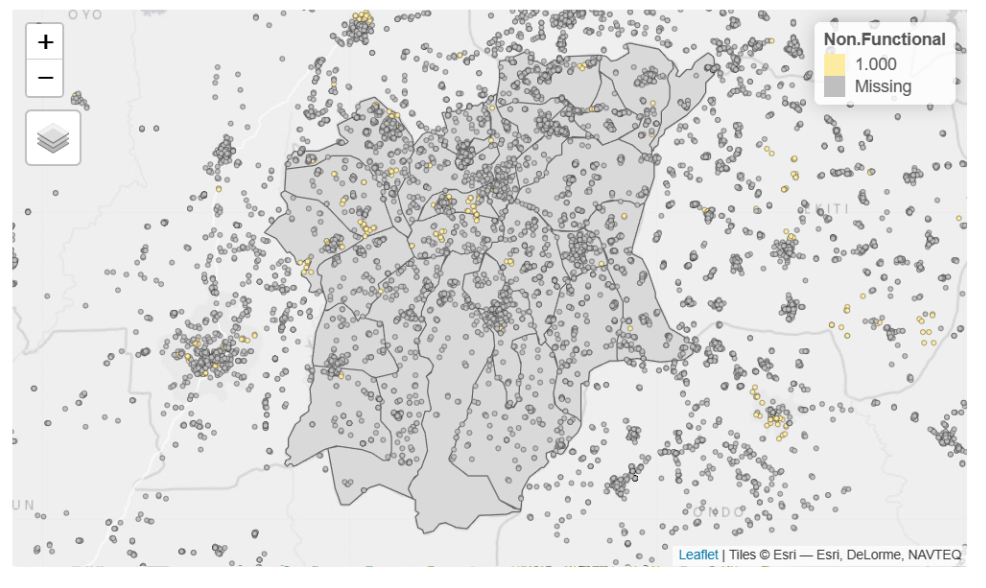

pacman::p_load(maptools, sf, tidyverse, raster, spatstat, tmap, sfdep, funModeling)Take Home Exercise 1
Take-home Exercise 1: Application of Spatial Point Patterns Analysis to discover the geographical distribution of functional and non-function water points in Osun State, Nigeria
Setting the Scene
Water is an important resource to mankind. Clean and accessible water is critical to human health. It provides a healthy environment, a sustainable economy, reduces poverty and ensures peace and security. Yet over 40% of the global population does not have access to sufficient clean water. By 2025, 1.8 billion people will be living in countries or regions with absolute water scarcity, according to UN-Water. The lack of water poses a major threat to several sectors, including food security. Agriculture uses about 70% of the world’s accessible freshwater.
Developing countries are most affected by water shortages and poor water quality. Up to 80% of illnesses in the developing world are linked to inadequate water and sanitation. Despite technological advancement, providing clean water to the rural community is still a major development issues in many countries globally, especially countries in the Africa continent.
To address the issue of providing clean and sustainable water supply to the rural community, a global Water Point Data Exchange (WPdx) project has been initiated. The main aim of this initiative is to collect water point related data from rural areas at the water point or small water scheme level and share the data via WPdx Data Repository, a cloud-based data library. What is so special of this project is that data are collected based on WPDx Data Standard.
Objectives
Geospatial analytics hold tremendous potential to address complex problems facing society. In this study, application of appropriate spatial point patterns analysis methods to discover the geographical distribution of functional and non-function water points and their co-locations if any in Osun State, Nigeria.
1 The Data
To provide answers to the questions above, three data sets will be used. They are:
Aspatial data
For the purpose of this assignment, data from WPdx Global Data Repositories will be used. There are two versions of the data. They are: WPdx-Basic and WPdx+. You are required to use WPdx+ data set.
Geospatial data
This study will focus of Osun State, Nigeria. The state boundary GIS data of Nigeria can be downloaded either from The Humanitarian Data Exchange portal or geoBoundaries.
1.1 Installing and Loading the R packages
In this take home exercise 1, six R packages will be used, they are:
sf, a relatively new R package specially designed to import, manage and process vector-based geospatial data in R.
spatstat, which has a wide range of useful functions for point pattern analysis. In this hands-on exercise, it will be used to perform 1st- and 2nd-order spatial point patterns analysis and derive kernel density estimation (KDE) layer.
tidyverse, tidyverse is an opinionated collection of R packages designed for data science. It is also coherent system of packages for data manipulation, exploration and visualization.
raster which reads, writes, manipulates, analyses and model of gridded spatial data (i.e. raster). In this hands-on exercise, it will be used to convert image output generate by spatstat into raster format.
maptools which provides a set of tools for manipulating geographic data. In this hands-on exercise, we mainly use it to convert Spatial objects into ppp format of spatstat.
tmap which provides functions for plotting cartographic quality static point patterns maps or interactive maps by using leaflet API.
sfdep which is an interface to ‘spdep’ to integrate with ‘sf’ objects and the ‘tidyverse’.
funModeling This package contains a set of functions related to exploratory data analysis, data preparation, and model performance.
Use the code chunk below to install and launch the seven R packages.
1.2 Importing the geospatial data
In this section, st_read of sf package will be used to import these data sets into R
Importing the geoBoundaries Nigeria Level 2 Administrative Boundary Dataset
gbnigeria = st_read(dsn = "Data/Geospatial", layer = "nga_admbnda_adm2_osgof_20190417")1.3 Importing the aspatial data
Since WPdx+ data set is in csv format, we will use read_csv() of readr package to import Water_Point_Data_Exchange_-_PlusWPdx.csv and output it to an R object called wpdx.
wpdx <- read_csv("Data/Aspatial/Water_Point_Data_Exchange_-_Plus__WPdx__.csv") %>% filter(`#clean_country_name` == "Nigeria")1.4 Converting the Coordinate Reference System
In the code below, we will convert the Geographic Coordinate Reference System from WGS84 to EPSG:26391 Projected Coordinate System.
nigeria26391 <- st_transform(gbnigeria, crs = 26391)1.5 Creating a Simple Feature Data Frame from an Aspatial Data Frame
As the geometry is available in wkt in the column New Georeferenced Column, we can use st_as_sfc() to import the geomtry
wpdx$Geometry <- st_as_sfc(wpdx$`New Georeferenced Column`)As there is no spatial data information, firstly, we assign the original projection when converting the tibble dataframe to sf. The original is wgs84 which is EPSG:4326.
wpdx_sf <- st_sf(wpdx, crs=4326)
wpdx_sfNext, we then convert the projection to the appropriate decimal based projection system.
wpdx_sf <- wpdx_sf %>%
st_transform(crs = 26391)2 Geospatial Data Cleaning
As the wpdx sf dataframe consist of many redundant field, we use select() to select the fields which we want to retain.
nigeria26391 <- nigeria26391 %>%
dplyr::select(c(3:4, 8:9))2.1 Checking for duplicate names
It is important to check for duplicate name in the data main data fields. Using duplicated(), we can flag out LGA names that might be duplicated as shown below:
nigeria26391$ADM2_EN[duplicated(nigeria26391$ADM2_EN) == TRUE]To reduce duplication of LGA names, we will put the state names behind to make it more specific.
nigeria26391$ADM2_EN[94] <- "Bassa, Kogi"
nigeria26391$ADM2_EN[95] <- "Bassa, Plateau"
nigeria26391$ADM2_EN[304] <- "Ifelodun, Kwara"
nigeria26391$ADM2_EN[305] <- "Ifelodun, Osun"
nigeria26391$ADM2_EN[355] <- "Irepodun, Kwara"
nigeria26391$ADM2_EN[356] <- "Ireopodun, Osun"
nigeria26391$ADM2_EN[519] <- "Nasarawa, Kano"
nigeria26391$ADM2_EN[520] <- "Nasarawa, Nasarawa"
nigeria26391$ADM2_EN[546] <- "Obi, Benue"
nigeria26391$ADM2_EN[547] <- "Obi, Nasarawa"
nigeria26391$ADM2_EN[693] <- "Surulere, Lagos"
nigeria26391$ADM2_EN[694] <- "Surulere, Oyo"Checking if the duplication has been resolved.
nigeria26391$ADM2_EN[duplicated(nigeria26391$ADM2_EN) == TRUE]3 Data wrangling for Water Point Data
First, let us have a look at the #status_clean column which stores the information about Functional and Non-Functional data points. The code below returns all values that were used in the column.
freq(data = wpdx_sf, input = '#status_clean')As there might be issues performing mathematical calculations with NA labels, we will rename them to unknown.
The code below renames the column #status_clean to status_clean, select only the status_clean for manipulation and then replace all na values to unknown.
wpdx_sf_nga <- wpdx_sf %>%
rename(status_clean = '#status_clean') %>%
dplyr::select(status_clean) %>%
mutate(status_clean = replace_na(status_clean, "unknown"))3.1 Filtering Data
With our previous knowledge, we can filter the data to obtain functional proportion counts in each LGA level. We will filter the wpdx_sf_nga dataframes to option functional and non-functional water points.
wpdx_func <- wpdx_sf_nga %>%
filter(status_clean %in%
c("Functional",
"Functional but not in use",
"Functional but needs repair"))
wpdx_nonfunc <- wpdx_sf_nga %>%
filter(status_clean %in%
c("Abadoned/Decommissioned",
"Abandoned",
"Non-Functional due to dry season",
"Non-Functional",
"Non functional due to dry season"))
wpdx_unknown <- wpdx_sf_nga %>%
filter(status_clean == "unknown")3.2 Point in Polygon Count
Utilising st_intersects() of sf package and lengths, we check where each data point for the water point which fall inside each LGA. We do each calculation separation so we can cross check later to ensure all the values sum to the same total.
nigeria_wp <- nigeria26391 %>%
mutate(`total_wp` = lengths(
st_intersects(nigeria26391, wpdx_sf_nga))) %>%
mutate(`wp_functional` = lengths(
st_intersects(nigeria26391, wpdx_func))) %>%
mutate(`wp_nonfunctional` = lengths(
st_intersects(nigeria26391, wpdx_nonfunc))) %>%
mutate(`wp_unknown` = lengths(
st_intersects(nigeria26391, wpdx_unknown)))3.3 Saving the Data in rds format
In order to retain the sf data structure for subsequent analysis, we should save the sf dataframe into rds format.
write_rds(nigeria_wp, "Data/rds/nigeria_wp.rds")3.4 Plotting the Distribution of Total Water Points by LGA in Histogram
Next, we will use mutate() of dplyr package to compute the proportion of Functional and Non- water points.
This is given by Functional Proportion = Functional Count / Total Count.
ggplot(data = nigeria_wp,
aes(x = total_wp)) +
geom_histogram(bins = 20,
color = "black",
fill = "light blue") +
geom_vline(aes(xintercept = mean(
total_wp, na.rm = T)),
color = "red",
linetype = "dashed",
size = 0.8) +
ggtitle("Distribution of total water points by LGA") +
xlab("No. of water points") +
ylab("No of\nLGAs") +
theme(axis.title.y = element_text(angle = 0))4 Exploratory Spatial Data Analysis (ESDA)
4.1 Import the data saved in rds
We want to import the sf dataframe we have cleaned and prepared earlier
NGA_wp <- read_rds("Data/rds/nigeria_wp.rds")4.2 Visualising Distribution of Non-Functional Water Points
Here, we will plot 2 maps, p1 which shows the functional water points and p2 by total number of water points for side-by-side visualization.
p1 <- tm_shape(NGA_wp) +
tm_fill("wp_functional",
n = 10,
style = "equal",
palette = "Blues") +
tm_borders(lwd = 0.1,
alpha = 1) +
tm_layout(main.title = "Distribution of functional water points by LGA",
legend.outside = FALSE)p2 <- tm_shape(NGA_wp) +
tm_fill("total_wp",
n = 10,
style = "equal",
palette = "Blues") +
tm_borders(lwd = 0.1,
alpha = 1) +
tm_layout(main.title = "Distribution of total water points by LGA",
legend.outside = FALSE)Using the tmap_arrange() function, we can arrange the two maps plotted on a single row for side-by-side comparison.
tmap_arrange(p2, p1, nrow = 1)4.3 Converting sf data frames to sp’s Spatial* class
Although simple feature data frame is gaining popularity again sp’s Spatial* classes, there are, however, many geospatial analysis packages require the input geospatial data in sp’s Spatial* classes
The code chunk below uses as_Spatial() of sf package to convert the geospatial data from simple feature data frame to sp’s Spatial* class.
wpdx_spdf <- as_Spatial(wpdx_sf)
nga_wpspdf <- as_Spatial(NGA_wp) wpdx_spdfnga_wpspdf4.4 Converting the Spatial* class into generic sp format
Spatstat requires the analytical data in ppp object form. There is no direct way to convert a Spatial* classes into ppp object. We need to convert the Spatial classes* into Spatial object first.
The codes chunk below converts the Spatial* classes into generic sp objects.
wpdx_sp <- as(wpdx_spdf, "SpatialPoints")
nga_wp_sp <- as(nga_wpspdf, "SpatialPolygons")wpdx_spnga_wp_sp4.5 Converting the generic sp format into spatstat’s ppp format
Now, we will use as.ppp() function of spatstat to convert the spatial data into spatstat’s ppp object format.
wpdx_ppp <- as(wpdx_sp, "ppp")
wpdx_pppTo check the summary
summary(wpdx_ppp)If newly created ppp object contain duplicate points
any(duplicated(wpdx_ppp))4.6 Creating owin object
When analysing spatial point patterns, it is a good practice to confine the analysis with a geographical area like Nigeria boundary. In spatstat, an object called owin is specially designed to represent this polygonal region.
The code chunk below is used to covert nga_wp_sp SpatialPolygon object into owin object of spatstat.
ng_owin <- as(nga_wp_sp, "owin")
plot(ng_owin)4.7 Combining point events object and owin object
In this last step of geospatial data wrangling, we will extract water points events that are located within Nigeria by using the code chunk below.
nigeria_PPP = wpdx_ppp[ng_owin]plot(nigeria_PPP)4.8 First order Spatial Point Pattern Analysis
In this section, you will learn how to perform first-order SPPA by using spatstat package. The hands-on exercise will focus on:
deriving kernel density estimation (KDE) layer for visualising and exploring the intensity of point processes,
performing Confirmatory Spatial Point Patterns Analysis by using Nearest Neighbour statistics.
4.9 Computing kernel density estimation using automatic bandwidth selection method
The code chunk below computes a kernel density by using the following configurations of density() of spatstat:
bw.diggle() automatic bandwidth selection method.
The smoothing kernel used is gaussian, which is the default.
The intensity estimate is corrected for edge effect bias by using method described by Jones (1993) and Diggle (2010, equation 18.9). The default is FALSE.
kde_nigeria_bw <- density(nigeria_PPP,
sigma=bw.diggle,
edge=TRUE,
kernel="gaussian") Plot() function of Base R is used to display kernel density derived.
plot(kde_nigeria_bw)The density values of the output range is way too small to comprehend. This is because the default unit of measurement of svy21 is in meter. As a result, the density values computed is in “number of points per square meter”.
Before we move on to next section, it is good to know that you can retrieve the bandwidth used to compute the kde layer by using the code chunk below.
bw <- bw.diggle(nigeria_PPP)
bwRescalling KDE values
In the code chunk below, rescale() is used to covert the unit of measurement from meter to kilometer.
nigeria_PPP.km <- rescale(nigeria_PPP, 1000, "km")Now, we can re-run density() using the resale data set and plot the output kde map. The use of sigma = bw.diggle is used to detect a single tight cluster which would be the osun state to be extracted later
kde_nigeria_PPP.bw <- density(nigeria_PPP.km, sigma=bw.diggle, edge=TRUE, kernel="gaussian")
plot(kde_nigeria_PPP.bw)5 Extracting study area of Nigeria, Osun
In this section, extraction of study of Nigeria, Osun will be done with the computation of KDE values.
osun = nga_wpspdf[nga_wpspdf@data$ADM1_EN == "Osun",]Plotting of OSUN state of Nigeria
plot(osun, main = "Osun")Next, conversion of SpatialPolygonsDataFrame layers into generic spatialpolygons layers
osun_sp = as(osun, "SpatialPolygons")Creating owin object to convert the above spatialpolygons objects into owin objects that is required by spatstat
osun_owin = as(osun_sp, "owin")Combining osun water points
nigeria_osun_PPP = wpdx_ppp[osun_owin]rescale() function is used to transform the unit of measurement from metre to kilometre
nigeria_osun_PPP.km = rescale(nigeria_osun_PPP, 1000, "km")Plotting the Osun water point study area
plot(nigeria_osun_PPP.km, main = "Osun")Visualising the SF layer for Osun
tmap_mode("view")
tm_shape(osun) +
tm_polygons() +
tm_dots(size = 0.01,
border.col = "black",
border.lwd = 0.5)osun1 <- tm_shape(osun) +
tm_fill("wp_functional",
n = 10,
style = "equal",
palette = "Blues") +
tm_borders(lwd = 0.1,
alpha = 1) +
tm_layout(main.title = "Distribution of functional water points by LGA",
legend.outside = FALSE)osun2 <- tm_shape(osun) +
tm_fill("wp_nonfunctional",
n = 10,
style = "equal",
palette = "Blues") +
tm_borders(lwd = 0.1,
alpha = 1) +
tm_layout(main.title = "Distribution of total water points by LGA",
legend.outside = FALSE)Osun State Functional and Non Functional Water Points
tmap_arrange(osun2, osun1, nrow = 1)5.1 Computing KDE of Osun State
The code below will be used to compute the KDE of Osun. bw.diggle method is used to derive the bandwidth
plot(density(nigeria_osun_PPP.km,
sigma=bw.diggle,
edge=TRUE,
kernel="gaussian"),
main="Osun")Computing fixed bandwidth KDE
plot(density(nigeria_osun_PPP.km,
sigma=0.25,
edge=TRUE,
kernel="gaussian"),
main="Osun")The advantage of kernel density map over point map is that it spreads the known quantity in color shades of waterpoints for each location in Osun State of Nigeria. Whereas for Kernel point, it only provides the pointer of waterpoints for each location in Osun State and does not state the number unless clicked.
6 Second Spatial Point Analysis
6.1 Performing Clarks Evans Test of Osun State
In this section, we will perform the Clark-Evans test of aggregation for a spatial point pattern by using clarkevans.test() of statspat.
The test hypotheses are:
Ho = The distribution of waterpoints are randomly distributed.
H1= The distribution of waterpoints are not randomly distributed.
The 95% confidence interval will be used.
clarkevans.test(nigeria_osun_PPP,
correction="none",
clipregion=NULL,
alternative=c("two.sided"),
nsim=999)Given the p value of 0.002 which is lesser than 0.05 of 95% confidence interval, H0 is rejected and we can conclude that the distribution of waterpoints are not randomly distributed
6.2 Analysing Second Spatial Point using L function
In this section, second spatial point L-function will be using Lest() of spatstat package. Monta carlo simulation test will be used using envelope() of spatstat package.
6.2.1 Computing L Function Estimation
#L_ck = Lest(nigeria_osun_PPP, correction = "Ripley")
#plot(L_ck, . -r ~ r,
# ylab= "L(d)-r", xlab = "d(m)")
6.2.2 Performing Complete Spatial Random Test
To confirm the observed spatial patterns above, a hypothesis test will be conducted. The hypothesis and test are as follows:
Ho = The distribution of Water Point at Osun State are randomly distributed.
H1= The distribution of Water Point at Osun State are not randomly distributed.
The null hypothesis will be rejected if p-value if smaller than alpha value of 0.001.
The code chunk below is used to perform the hypothesis testing
#L_ck.csr <- envelope(nigeria_osun_PPP, Lest, nsim = 39, rank = 1, glocal=TRUE)#plot(L_ck.csr, . - r ~ r, xlab="d", ylab="L(d)-r")From the chart, given the L_ck.csr plotted graph exited the envelope this shows that it is lesser than 0.05 of 95% confidence interval, H0 is rejected and we can conclude that the distribution of waterpoints are not randomly distributed
7 Local Colocation Quotients (LCLQ)
7.1 Visualising the SF Layer
# wpdx_lclq <- wpdx_sf_nga %>%
# filter(status_clean %in%
# c("Functional",
# "Non-Functional"))# tmap_mode("view")
# tm_shape(osun) +
# tm_polygons() +
# tm_shape(wpdx_lclq) +
# tm_dots(col = "status_clean",
# size = 0.01,
# border.col = "black",
# border.lwd = 0.5)
7.2 Applying Local Colocation Quotients (LCLQ)
# nb <- include_self(
# st_knn(st_geometry(wpdx_lclq), 6))# wt <- st_kernel_weights(nb,
# wpdx_lclq,
# "gaussian",
# adaptive = TRUE)# Functional <- wpdx_lclq %>%
# filter(status_clean == "Functional")
# A <- Functional$status_clean# NonFunctional <- wpdx_lclq %>%
# filter(status_clean == "Non-Functional")
# B <- NonFunctional$status_clean# LCLQ <- local_colocation(A, B, nb, wt , 20)# LCLQ_sf_nga <- cbind(wpdx_lclq, LCLQ)# tmap_mode("view")
# tm_shape(osun) +
# tm_polygons() +
# tm_shape(LCLQ_sf_nga) +
# tm_dots(col = "Non.Functional",
# size = 0.01,
# border.col = "black",
# border.lwd = 0.5)
After applying the local colocation quotients for the Osun State, we can conclude that there are many ‘missing’ water points in Osun which implies that there is no correlation between the water points.
After performing the ‘clark evans test’, ‘L function’ and the ‘local colocation quotients’, we can conclude that H0 is rejected, the functional and non functional water points in Osun State are not randomly distributed. In addition, there is no correlation between the water points.
Note to Professor,
I have commented out the code chunks above after section 6.2 because when rendered, the take_home_ex1.html file is over 70mb which I have issue committing and pushing to my github repository. The images from section 6.2 onwards are statically pasted to reduce the file size.
End of take home exercise 1